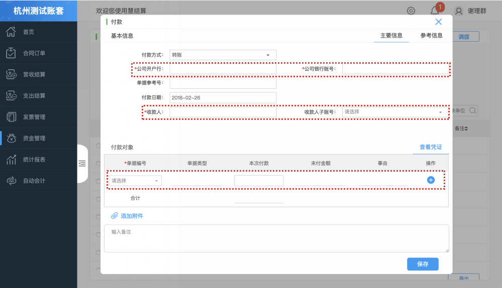

付款单
付款单是反映资金支付业务的依据，能有效的管理和控制经济业务。付款单生成后将产生企业日记账的付款记录。

- 点击“付款”进入付款界面，填写相应信息后，点击“保存”保存付款单。
- 选定收款人后，在付款对象中才能选到付款单据。
- 单据类型为支出报销单时，本次付款金额可以修改，可以部分付款。单据类型为其他付款单时，只能全部付款。支持多笔单据同时支付。
- 付款完成后，在企业日记账中产生付款记录。
- 支出报销单和其他付款单的收款人存在子账号时，在付款单的收款人子账号处必选相同子账号，否则付款对象处没有对应单据可以支出。